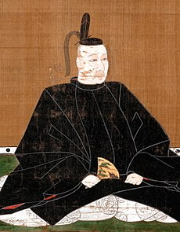

小早川隆景
1533年〜1597年
安芸国・毛利元就の三男として生まれる。1555年の厳島の戦いでは毛利水軍の指揮官としても活躍し、勝利に貢献した。毛利輝元とともに西国の平定にも尽力するなど、毛利家の戦いを指揮している。豊臣秀吉とはライバル関係だったが、備中高松城攻めの際の講和を機に協力関係を結ぶ。その後は秀吉の四国征伐に同行したほか、1592年にはじまった朝鮮出兵にも参加するなど、秀吉を支え続けた。豊臣政権下では大老格の一人となった。隆景は、生涯を通じて父である元就の「競って天下を望まず」という遺訓を守り抜いたといえよう。敵だった隆景がここまで厚遇されたのは、彼の器量の大きさが評価されたためといわれている。秀吉に「これからの日本を任せられるのは直江兼続と小早川隆景」と言わしめたほどであった。